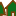
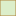

<!doctype html>
<html lang="en">
    <head>
        <meta charset="utf-8">
        <meta http-equiv="X-UA-Compatible" content="IE=edge">
        <meta name="viewport" content="initial-scale=1,user-scalable=no,maximum-scale=1,width=device-width">
        <meta name="mobile-web-app-capable" content="yes">
        <meta name="apple-mobile-web-app-capable" content="yes">
        <link rel="stylesheet" href="css/leaflet.css">
        <link rel="stylesheet" href="css/qgis2web.css"><link rel="stylesheet" href="css/fontawesome-all.min.css">
        <link rel="stylesheet" href="css/leaflet-measure.css">
        <style>
        html, body, #map {
            width: 100%;
            height: 100%;
            padding: 0;
            margin: 0;
        }
        </style>
        <title>Mapa interactivo NATURE EXPERIENCE</title>
    </head>
    <body>
        <div id="map">
        </div>
        <script src="js/qgis2web_expressions.js"></script>
        <script src="js/leaflet.js"></script>
        <script src="js/leaflet.rotatedMarker.js"></script>
        <script src="js/leaflet.pattern.js"></script>
        <script src="js/leaflet-hash.js"></script>
        <script src="js/Autolinker.min.js"></script>
        <script src="js/rbush.min.js"></script>
        <script src="js/labelgun.min.js"></script>
        <script src="js/labels.js"></script>
        <script src="js/leaflet-measure.js"></script>
        <script src="data/Provincias_2.js"></script>
        <script src="data/Ecuador_3.js"></script>
        <script src="data/AreasProtegidasSNAP_4.js"></script>
        <script src="data/ReservasyEstBilogicas_5.js"></script>
        <script src="data/Ciudades_6.js"></script>
        <script src="data/NatureExperience_7.js"></script>
        <script src="data/RosadelosVientos_8.js"></script>
        <script>
        var map = L.map('map', {
            zoomControl:true, maxZoom:28, minZoom:1
        }).fitBounds([[-4.834817122648944,-84.02684088358812],[1.3586864221017487,-71.85759993306966]]);
        var hash = new L.Hash(map);
        map.attributionControl.setPrefix('<a href="https://github.com/tomchadwin/qgis2web" target="_blank">qgis2web</a> &middot; <a href="https://leafletjs.com" title="A JS library for interactive maps">Leaflet</a> &middot; <a href="https://qgis.org">QGIS</a>');
        var autolinker = new Autolinker({truncate: {length: 30, location: 'smart'}});
        var measureControl = new L.Control.Measure({
            position: 'topleft',
            primaryLengthUnit: 'meters',
            secondaryLengthUnit: 'kilometers',
            primaryAreaUnit: 'sqmeters',
            secondaryAreaUnit: 'hectares'
        });
        measureControl.addTo(map);
        document.getElementsByClassName('leaflet-control-measure-toggle')[0]
        .innerHTML = '';
        document.getElementsByClassName('leaflet-control-measure-toggle')[0]
        .className += ' fas fa-ruler';
        var bounds_group = new L.featureGroup([]);
        function setBounds() {
        }
        map.createPane('pane_Fondoacuarela_0');
        map.getPane('pane_Fondoacuarela_0').style.zIndex = 400;
        var layer_Fondoacuarela_0 = L.tileLayer('http://tile.stamen.com/watercolor/{z}/{x}/{y}.jpg', {
            pane: 'pane_Fondoacuarela_0',
            opacity: 1.0,
            attribution: '<a href="http://maps.stamen.com/">Map tiles by Stamen Design, under CC BY 3.0. Data by OpenStreetMap, under CC BY SA</a>',
            minZoom: 1,
            maxZoom: 28,
            minNativeZoom: 0,
            maxNativeZoom: 18
        });
        layer_Fondoacuarela_0;
        map.addLayer(layer_Fondoacuarela_0);
        map.createPane('pane_Caparelieve_1');
        map.getPane('pane_Caparelieve_1').style.zIndex = 401;
        var layer_Caparelieve_1 = L.tileLayer('http://a.tile.stamen.com/terrain-background/{z}/{x}/{y}.png', {
            pane: 'pane_Caparelieve_1',
            opacity: 0.533,
            attribution: '<a href="http://maps.stamen.com/">Map tiles by Stamen Design, under CC BY 3.0. Data by OpenStreetMap, under ODbL</a>',
            minZoom: 1,
            maxZoom: 28,
            minNativeZoom: 0,
            maxNativeZoom: 20
        });
        layer_Caparelieve_1;
        map.addLayer(layer_Caparelieve_1);
        function pop_Provincias_2(feature, layer) {
            var popupContent = '<table>\
                    <tr>\
                        <th scope="row">DPA_DESPRO</th>\
                        <td>' + (feature.properties['DPA_DESPRO'] !== null ? autolinker.link(feature.properties['DPA_DESPRO'].toLocaleString()) : '') + '</td>\
                    </tr>\
                </table>';
            layer.bindPopup(popupContent, {maxHeight: 400});
        }

        function style_Provincias_2_0() {
            return {
                pane: 'pane_Provincias_2',
                opacity: 1,
                color: 'rgba(35,35,35,1.0)',
                dashArray: '',
                lineCap: 'butt',
                lineJoin: 'miter',
                weight: 1.0, 
                fill: true,
                fillOpacity: 1,
                fillColor: 'rgba(243,166,178,0.0)',
                interactive: false,
            }
        }
        map.createPane('pane_Provincias_2');
        map.getPane('pane_Provincias_2').style.zIndex = 402;
        map.getPane('pane_Provincias_2').style['mix-blend-mode'] = 'normal';
        var layer_Provincias_2 = new L.geoJson(json_Provincias_2, {
            attribution: '',
            interactive: false,
            dataVar: 'json_Provincias_2',
            layerName: 'layer_Provincias_2',
            pane: 'pane_Provincias_2',
            onEachFeature: pop_Provincias_2,
            style: style_Provincias_2_0,
        });
        bounds_group.addLayer(layer_Provincias_2);
        function pop_Ecuador_3(feature, layer) {
        }

        function style_Ecuador_3_0() {
            return {
                pane: 'pane_Ecuador_3',
                opacity: 1,
                color: 'rgba(35,35,35,1.0)',
                dashArray: '',
                lineCap: 'butt',
                lineJoin: 'miter',
                weight: 2.0, 
                fill: true,
                fillOpacity: 1,
                fillColor: 'rgba(192,211,183,0.0)',
                interactive: false,
            }
        }
        map.createPane('pane_Ecuador_3');
        map.getPane('pane_Ecuador_3').style.zIndex = 403;
        map.getPane('pane_Ecuador_3').style['mix-blend-mode'] = 'normal';
        var layer_Ecuador_3 = new L.geoJson(json_Ecuador_3, {
            attribution: '',
            interactive: false,
            dataVar: 'json_Ecuador_3',
            layerName: 'layer_Ecuador_3',
            pane: 'pane_Ecuador_3',
            onEachFeature: pop_Ecuador_3,
            style: style_Ecuador_3_0,
        });
        bounds_group.addLayer(layer_Ecuador_3);
        map.addLayer(layer_Ecuador_3);
        function pop_AreasProtegidasSNAP_4(feature, layer) {
            var popupContent = '<table>\
                    <tr>\
                        <td colspan="2"><strong>Nombre</strong><br />' + (feature.properties['nam'] !== null ? autolinker.link(feature.properties['nam'].toLocaleString()) : '') + '</td>\
                    </tr>\
                    <tr>\
                        <th scope="row">Area (ha)</th>\
                        <td>' + (feature.properties['are'] !== null ? autolinker.link(feature.properties['are'].toLocaleString()) : '') + '</td>\
                    </tr>\
                    <tr>\
                        <th scope="row">Enlace web </th>\
                        <td>' + (feature.properties['LINK'] !== null ? autolinker.link(feature.properties['LINK'].toLocaleString()) : '') + '</td>\
                    </tr>\
                    <tr>\
                        <td colspan="2">' + (feature.properties['SomeNam'] !== null ? autolinker.link(feature.properties['SomeNam'].toLocaleString()) : '') + '</td>\
                    </tr>\
                </table>';
            layer.bindPopup(popupContent, {maxHeight: 400});
        }

        function style_AreasProtegidasSNAP_4_0() {
            return {
                pane: 'pane_AreasProtegidasSNAP_4',
                opacity: 1,
                color: 'rgba(160,91,6,1.0)',
                dashArray: '',
                lineCap: 'butt',
                lineJoin: 'miter',
                weight: 1.0, 
                fill: true,
                fillOpacity: 1,
                fillColor: 'rgba(137,193,72,0.5254901960784314)',
                interactive: true,
            }
        }
        map.createPane('pane_AreasProtegidasSNAP_4');
        map.getPane('pane_AreasProtegidasSNAP_4').style.zIndex = 404;
        map.getPane('pane_AreasProtegidasSNAP_4').style['mix-blend-mode'] = 'normal';
        var layer_AreasProtegidasSNAP_4 = new L.geoJson(json_AreasProtegidasSNAP_4, {
            attribution: '',
            interactive: true,
            dataVar: 'json_AreasProtegidasSNAP_4',
            layerName: 'layer_AreasProtegidasSNAP_4',
            pane: 'pane_AreasProtegidasSNAP_4',
            onEachFeature: pop_AreasProtegidasSNAP_4,
            style: style_AreasProtegidasSNAP_4_0,
        });
        bounds_group.addLayer(layer_AreasProtegidasSNAP_4);
        map.addLayer(layer_AreasProtegidasSNAP_4);
        function pop_ReservasyEstBilogicas_5(feature, layer) {
            var popupContent = '<table>\
                    <tr>\
                        <td colspan="2">' + (feature.properties['Name'] !== null ? autolinker.link(feature.properties['Name'].toLocaleString()) : '') + '</td>\
                    </tr>\
                    <tr>\
                        <th scope="row">Altitud</th>\
                        <td>' + (feature.properties['altitudeMo'] !== null ? autolinker.link(feature.properties['altitudeMo'].toLocaleString()) : '') + '</td>\
                    </tr>\
                    <tr>\
                        <th scope="row">Descripción</th>\
                        <td>' + (feature.properties['Descripcio'] !== null ? autolinker.link(feature.properties['Descripcio'].toLocaleString()) : '') + '</td>\
                    </tr>\
                    <tr>\
                        <th scope="row">Enlace web</th>\
                        <td>' + (feature.properties['Link'] !== null ? autolinker.link(feature.properties['Link'].toLocaleString()) : '') + '</td>\
                    </tr>\
                    <tr>\
                        <th scope="row">Itinerario Nature Experience</th>\
                        <td>' + (feature.properties['Itinerario'] !== null ? autolinker.link(feature.properties['Itinerario'].toLocaleString()) : '') + '</td>\
                    </tr>\
                </table>';
            layer.bindPopup(popupContent, {maxHeight: 400});
        }

        function style_ReservasyEstBilogicas_5_0() {
            return {
                pane: 'pane_ReservasyEstBilogicas_5',
        rotationAngle: 0.0,
        rotationOrigin: 'center center',
        icon: L.icon({
            iconUrl: 'markers/accommodation_youth_hostel.svg',
            iconSize: [26.599999999999998, 26.599999999999998]
        }),
                interactive: true,
            }
        }
        map.createPane('pane_ReservasyEstBilogicas_5');
        map.getPane('pane_ReservasyEstBilogicas_5').style.zIndex = 405;
        map.getPane('pane_ReservasyEstBilogicas_5').style['mix-blend-mode'] = 'normal';
        var layer_ReservasyEstBilogicas_5 = new L.geoJson(json_ReservasyEstBilogicas_5, {
            attribution: '',
            interactive: true,
            dataVar: 'json_ReservasyEstBilogicas_5',
            layerName: 'layer_ReservasyEstBilogicas_5',
            pane: 'pane_ReservasyEstBilogicas_5',
            onEachFeature: pop_ReservasyEstBilogicas_5,
            pointToLayer: function (feature, latlng) {
                var context = {
                    feature: feature,
                    variables: {}
                };
                return L.marker(latlng, style_ReservasyEstBilogicas_5_0(feature));
            },
        });
        bounds_group.addLayer(layer_ReservasyEstBilogicas_5);
        map.addLayer(layer_ReservasyEstBilogicas_5);
        function pop_Ciudades_6(feature, layer) {
            var popupContent = '<table>\
                    <tr>\
                        <td colspan="2"><strong>Ciudades</strong><br />' + (feature.properties['Ciudades'] !== null ? autolinker.link(feature.properties['Ciudades'].toLocaleString()) : '') + '</td>\
                    </tr>\
                    <tr>\
                        <th scope="row">Altitud</th>\
                        <td>' + (feature.properties['Altitud'] !== null ? autolinker.link(feature.properties['Altitud'].toLocaleString()) : '') + '</td>\
                    </tr>\
                </table>';
            layer.bindPopup(popupContent, {maxHeight: 400});
        }

        function style_Ciudades_6_0() {
            return {
                pane: 'pane_Ciudades_6',
        rotationAngle: 0.0,
        rotationOrigin: 'center center',
        icon: L.icon({
            iconUrl: 'markers/city-11.svg',
            iconSize: [26.599999999999998, 26.599999999999998]
        }),
                interactive: true,
            }
        }
        map.createPane('pane_Ciudades_6');
        map.getPane('pane_Ciudades_6').style.zIndex = 406;
        map.getPane('pane_Ciudades_6').style['mix-blend-mode'] = 'normal';
        var layer_Ciudades_6 = new L.geoJson(json_Ciudades_6, {
            attribution: '',
            interactive: true,
            dataVar: 'json_Ciudades_6',
            layerName: 'layer_Ciudades_6',
            pane: 'pane_Ciudades_6',
            onEachFeature: pop_Ciudades_6,
            pointToLayer: function (feature, latlng) {
                var context = {
                    feature: feature,
                    variables: {}
                };
                return L.marker(latlng, style_Ciudades_6_0(feature));
            },
        });
        bounds_group.addLayer(layer_Ciudades_6);
        map.addLayer(layer_Ciudades_6);
        function pop_NatureExperience_7(feature, layer) {
            var popupContent = '<table>\
                    <tr>\
                        <th scope="row">Oficina central </th>\
                        <td>' + (feature.properties['Adresse'] !== null ? autolinker.link(feature.properties['Adresse'].toLocaleString()) : '') + '</td>\
                    </tr>\
                    <tr>\
                        <th scope="row">Enlace web</th>\
                        <td>' + (feature.properties['link'] !== null ? autolinker.link(feature.properties['link'].toLocaleString()) : '') + '</td>\
                    </tr>\
                </table>';
            layer.bindPopup(popupContent, {maxHeight: 400});
        }

        function style_NatureExperience_7_0() {
            return {
                pane: 'pane_NatureExperience_7',
        rotationAngle: 0.0,
        rotationOrigin: 'center center',
        icon: L.icon({
            iconUrl: 'markers/home-15.svg',
            iconSize: [26.35984, 26.35984]
        }),
                interactive: true,
            }
        }
        map.createPane('pane_NatureExperience_7');
        map.getPane('pane_NatureExperience_7').style.zIndex = 407;
        map.getPane('pane_NatureExperience_7').style['mix-blend-mode'] = 'normal';
        var layer_NatureExperience_7 = new L.geoJson(json_NatureExperience_7, {
            attribution: '',
            interactive: true,
            dataVar: 'json_NatureExperience_7',
            layerName: 'layer_NatureExperience_7',
            pane: 'pane_NatureExperience_7',
            onEachFeature: pop_NatureExperience_7,
            pointToLayer: function (feature, latlng) {
                var context = {
                    feature: feature,
                    variables: {}
                };
                return L.marker(latlng, style_NatureExperience_7_0(feature));
            },
        });
        bounds_group.addLayer(layer_NatureExperience_7);
        map.addLayer(layer_NatureExperience_7);
        function pop_RosadelosVientos_8(feature, layer) {
            var popupContent = '<table>\
                    <tr>\
                        <td colspan="2">' + (feature.properties['id'] !== null ? autolinker.link(feature.properties['id'].toLocaleString()) : '') + '</td>\
                    </tr>\
                </table>';
            layer.bindPopup(popupContent, {maxHeight: 400});
        }

        function style_RosadelosVientos_8_0() {
            return {
                pane: 'pane_RosadelosVientos_8',
        rotationAngle: 0.0,
        rotationOrigin: 'center center',
        icon: L.icon({
            iconUrl: 'markers/NorthArrow_05.svg',
            iconSize: [30.4, 30.4]
        }),
                interactive: false,
            }
        }
        map.createPane('pane_RosadelosVientos_8');
        map.getPane('pane_RosadelosVientos_8').style.zIndex = 408;
        map.getPane('pane_RosadelosVientos_8').style['mix-blend-mode'] = 'normal';
        var layer_RosadelosVientos_8 = new L.geoJson(json_RosadelosVientos_8, {
            attribution: '',
            interactive: false,
            dataVar: 'json_RosadelosVientos_8',
            layerName: 'layer_RosadelosVientos_8',
            pane: 'pane_RosadelosVientos_8',
            onEachFeature: pop_RosadelosVientos_8,
            pointToLayer: function (feature, latlng) {
                var context = {
                    feature: feature,
                    variables: {}
                };
                return L.marker(latlng, style_RosadelosVientos_8_0(feature));
            },
        });
        bounds_group.addLayer(layer_RosadelosVientos_8);
        map.addLayer(layer_RosadelosVientos_8);
            var title = new L.Control();
            title.onAdd = function (map) {
                this._div = L.DomUtil.create('div', 'info');
                this.update();
                return this._div;
            };
            title.update = function () {
                this._div.innerHTML = '<h2>Mapa interactivo NATURE EXPERIENCE</h2>';
            };
            title.addTo(map);
            var abstract = new L.Control({'position':'topright'});
            abstract.onAdd = function (map) {
                this._div = L.DomUtil.create('div',
                'leaflet-control leaflet-bar abstract');
                this._div.id = 'abstract'

                    abstract.show();
                    return this._div;
                };
                abstract.show = function () {
                    this._div.classList.remove("abstract");
                    this._div.classList.add("abstractUncollapsed");
                    this._div.innerHTML = 'En este mapa descubrirás los lugares que puedes visitar a través de nuestros itinerarios a medida, diseñados especialmente para ti!<br /><br />Haz CLICK en los iconos y en las áreas protegidas en el mapa para más información. ';
            };
            abstract.addTo(map);
        var baseMaps = {};
        L.control.layers(baseMaps,{' Rosa de los Vientos': layer_RosadelosVientos_8,' Nature Experience': layer_NatureExperience_7,' Ciudades': layer_Ciudades_6,' Reservas y Est. Biólogicas': layer_ReservasyEstBilogicas_5,' Areas Protegidas SNAP': layer_AreasProtegidasSNAP_4,' Ecuador': layer_Ecuador_3,' Provincias': layer_Provincias_2,"Capa relieve": layer_Caparelieve_1,"Fondo acuarela": layer_Fondoacuarela_0,},{collapsed:false}).addTo(map);
        setBounds();
        var i = 0;
        layer_Provincias_2.eachLayer(function(layer) {
            var context = {
                feature: layer.feature,
                variables: {}
            };
            layer.bindTooltip((layer.feature.properties['DPA_DESPRO'] !== null?String('<div style="color: #000000; font-size: 10pt; font-family: \'Tempus Sans ITC\', sans-serif;">' + layer.feature.properties['DPA_DESPRO']) + '</div>':''), {permanent: true, offset: [-0, -16], className: 'css_Provincias_2'});
            labels.push(layer);
            totalMarkers += 1;
              layer.added = true;
              addLabel(layer, i);
              i++;
        });
        var i = 0;
        layer_AreasProtegidasSNAP_4.eachLayer(function(layer) {
            var context = {
                feature: layer.feature,
                variables: {}
            };
            layer.bindTooltip((layer.feature.properties['SomeNam'] !== null?String('<div style="color: #0d6225; font-size: 10pt; font-family: \'Lucida Handwriting\', sans-serif;">' + layer.feature.properties['SomeNam']) + '</div>':''), {permanent: true, offset: [-0, -16], className: 'css_AreasProtegidasSNAP_4'});
            labels.push(layer);
            totalMarkers += 1;
              layer.added = true;
              addLabel(layer, i);
              i++;
        });
        var i = 0;
        layer_Ciudades_6.eachLayer(function(layer) {
            var context = {
                feature: layer.feature,
                variables: {}
            };
            layer.bindTooltip((layer.feature.properties['Ciudades'] !== null?String('<div style="color: #000000; font-size: 10pt; font-family: \'MS Shell Dlg 2\', sans-serif;">' + layer.feature.properties['Ciudades']) + '</div>':''), {permanent: true, offset: [-0, -16], className: 'css_Ciudades_6'});
            labels.push(layer);
            totalMarkers += 1;
              layer.added = true;
              addLabel(layer, i);
              i++;
        });
        resetLabels([layer_Provincias_2,layer_AreasProtegidasSNAP_4,layer_Ciudades_6]);
        map.on("zoomend", function(){
            resetLabels([layer_Provincias_2,layer_AreasProtegidasSNAP_4,layer_Ciudades_6]);
        });
        map.on("layeradd", function(){
            resetLabels([layer_Provincias_2,layer_AreasProtegidasSNAP_4,layer_Ciudades_6]);
        });
        map.on("layerremove", function(){
            resetLabels([layer_Provincias_2,layer_AreasProtegidasSNAP_4,layer_Ciudades_6]);
        });
        </script>
    </body>
</html>
